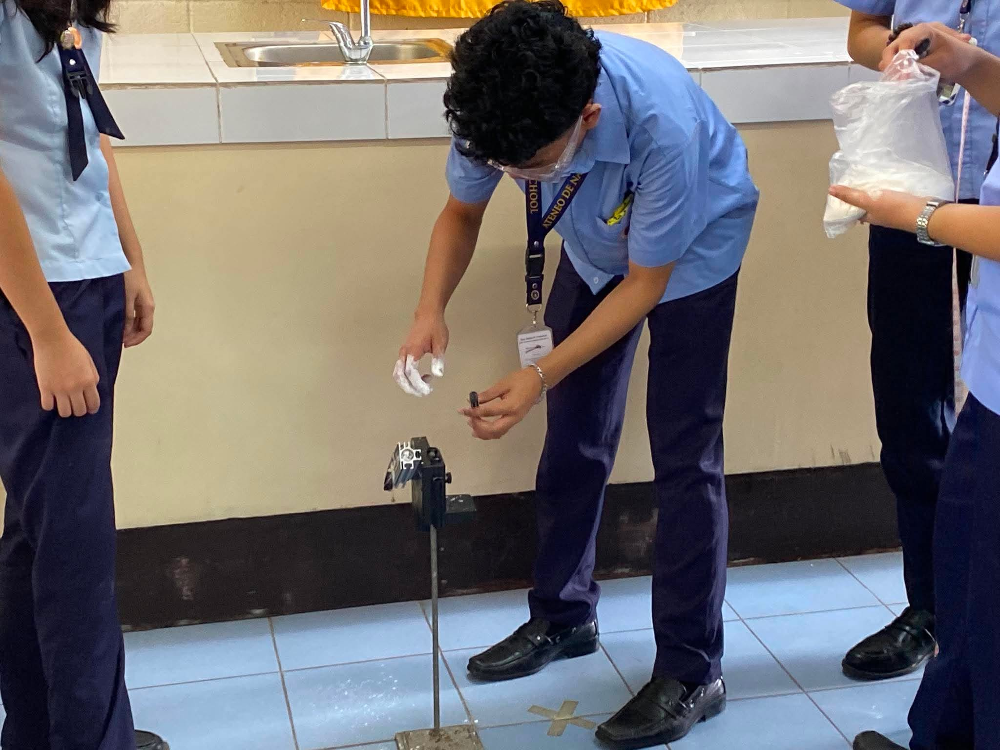
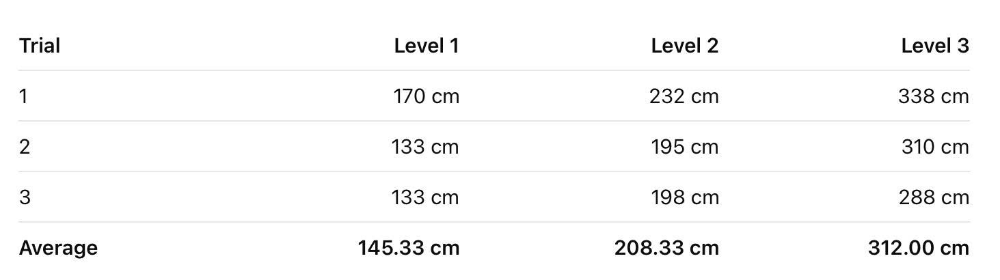
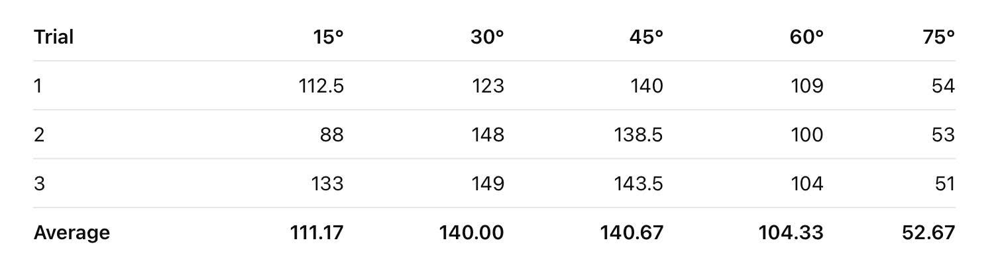
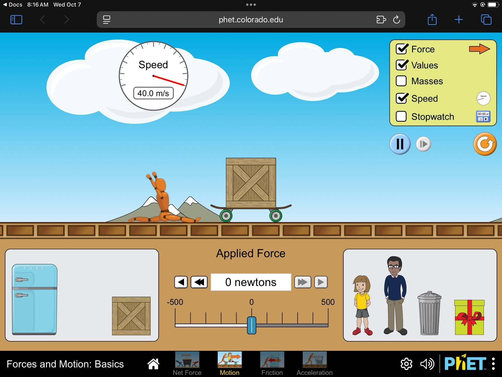
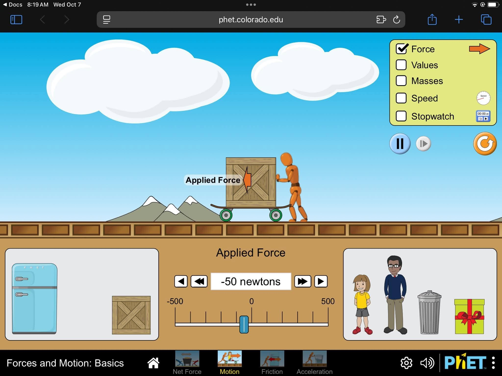

Purpose
Our hive of learning, where curiosity takes flight and physics becomes fun through interactive activities.
Science, teamwork, and sweet discoveries
A cheerful portfolio space for eight busy bees to introduce themselves, present laboratory activities, and share personal reflections.
Click member cards, switch lab tabs, and open reflections at the end.
Our hive of learning, where curiosity takes flight and physics becomes fun through interactive activities.
Explore our experiments as we buzz through the wonders of motion and discover the science behind each activity.
Like bees working together, we learn, grow, and gather knowledge from every experiment and discovery.
Meet the hive
Click a bee card to spotlight a member, then jump to their reflection.
Team Leader
Data organizerMaterial Manager
Lab setupResearcher
Background notesExperiment Lead
Procedure guideRecorder
Observation logAnalyst
Results reviewDesigner
Visual layoutPresenter
Final sharingLab nectar
Join our hive of discovery as we investigate the wonders of physics through hands-on experiments and buzzing scientific explorations.
Activity 01
This laboratory experiment aimed to investigate projectile motion, specifically the effects of initial velocity and launch angle on the horizontal range of a projectile. Our group utilized a projectile launcher, steel marble, measuring tape, and marking powder to conduct two experimental setups.
The first setup maintained a constant launch angle of 30° while varying the launching strength across three levels. Meanwhile, the second setup maintained a constant launching strength at Level 1 while testing five different launch angles: 15°, 30°, 45°, 60°, and 75°. Each condition was performed in three trials, with the horizontal distances measured and recorded for comparison. Throughout the activity, our group collaborated in operating the apparatus, gathering measurements, documenting observations, and addressing difficulties in identifying the projectile’s landing position.
Based on the gathered data, our group determined that initial velocity and launch angle influence the horizontal range of a projectile in different ways. In the first setup, launching strength served as the independent variable, while horizontal range was the dependent variable. At a constant angle of 30°, the average range increased from 145.33 cm at Level 1 to 208.33 cm at Level 2 and 312.00 cm at Level 3. This demonstrates a positive relationship between initial velocity and horizontal range, as greater launching strength generally produces a higher initial velocity, allowing the projectile to travel farther under comparable conditions. In the second setup, the launch angle served as the independent variable, while the launching strength remained constant. The results showed a nonlinear relationship, with the average range increasing from 111.17 cm at 15° to approximately 140.67 cm at 45°, before decreasing to 52.67 cm at 75°. Although the recorded averages at 30° and 45° were nearly equal, 45° produced the greatest average range among the tested angles. These findings demonstrate that the horizontal range does not continuously increase with the launch angle but depends on the combined effects of horizontal velocity and time of flight.
Through this experiment, our group established that the horizontal range of a projectile is influenced by its initial velocity and angle of projection. At a constant launch angle, increasing the initial velocity generally increases the horizontal distance traveled. However, when initial velocity remains constant, changing the launch angle produces a nonlinear relationship with the range. Under ideal conditions, where air resistance is negligible and the projectile lands at the same height from which it was launched, a 45° angle produces the maximum horizontal range because it provides the most effective combination of horizontal velocity and flight duration. Our experimental findings generally supported these principles, demonstrating how projectile motion can be observed and analyzed through controlled laboratory investigations.



In conclusion, this laboratory experiment strengthened our understanding of projectile motion by demonstrating how launching strength and angle of projection affect the horizontal range of an object. The activity also allowed our group to develop essential laboratory skills, including proper equipment handling, accurate measurement, systematic data recording, and critical analysis of experimental results. Despite encountering difficulties in marking the projectile’s landing position, we applied practical troubleshooting techniques to improve our observations. As aspiring Physics Laboratory Assistants at the Naga Science Hub, this experience emphasized the importance of teamwork, precision, adaptability, and scientific responsibility in conducting reliable experiments. It also demonstrated the relevance of projectile motion in real-life applications, particularly in sports, engineering, and other activities involving the motion of objects under gravity.
Activity 02
The group used the PhET simulation to investigate how force, mass, and friction affect motion, observing their effects on acceleration and velocity.
In the first setup, investigating Newton's First Law (Law of Inertia) showed that applying a 50N force to the right gives a box an acceleration that continuously increases its speed, velocity, and displacement toward the right. When a 50N force was applied for 5 seconds and then reduced to zero, the box moved slower due to friction until it stopped. Applying a 50N force to the left similarly increased its speed, velocity, and displacement toward the left. To bring a moving box to a complete stop, an opposing force must be applied in the direction opposite to its motion until the speedometer reads zero velocity.
In exploring Newton's Second Law, the first table measured the time required for a garbage can on a skateboard to reach maximum speed under varying applied forces. At 50N, it took 01:18.34s; at 100 N, it took 00:39.53s; and at 200N, it took 00:18.71s. In the second table under a constant applied force of 200N to the right, varying object masses yielded different times to reach maximum speed: 50kg took 00:10.23 s, 100kg took 00:19.69 s, 150kg took 00:30.01s, and a 200kg refrigerator took 00:40.65s.
To examine Friction's Effects, setting friction to "none" utilized an icy track simulation to represent a baseline closest to a real-world zero-friction environment, demonstrating that truly frictionless environments do not exist in everyday life. When the friction slider was adjusted halfway while a box was gliding, the object continued sliding briefly before coming to a sudden, abrupt halt.
Returning to Newton's Second Law with friction enabled, applying a 50N or 100N force kept the box at rest because the applied force was less than the maximum static friction, resulting in an equal and opposite counterbalancing static friction force. Conversely, applying a 150N force overcame friction, creating an unbalanced net force that caused the box's speed to continuously increase. Enabling the "Sum of Forces" box confirmed that the 50N and 100N scenarios maintained zero velocity, whereas the 150N scenario displayed an active green arrow indicating motion.
In analyzing Friction in Detail, the crate remained stationary until an applied force between 100N and 150N overcame static friction. Reducing the force by 50N after 2s caused deceleration because the push was insufficient to maintain forward acceleration. Step-by-step increases showed a 1:1 ratio between applied force and static friction up to 124N, where friction suddenly dropped to a constant kinetic value of 92N, leaving a net force of +32N due to micro-surface bonds breaking. Reducing the applied force to zero after 3s kept kinetic friction constant until the crate stopped and friction disappeared. Testing two crates (100kg) showed that 200N was required to keep them moving compared to 150N for one crate, proving that higher mass increases frictional resistance. Finally, testing 50N and 100N applied forces verified that static friction matches applied forces perfectly while the crate remains stationary


In conclusion, our laboratory activity successfully verified Newton’s Laws of Motion and the dynamic behavior of frictional forces using a PhET interactive simulation. In a frictionless environment, the simulation demonstrated Newton’s First Law, showing that an object maintains a constant velocity indefinitely once an applied force is removed. For Newton's Second Law, the collected data proved that acceleration is directly proportional to applied force and inversely proportional to mass. Increasing the force significantly reduced the time required to reach maximum speed, while increasing the object's mass made it longer to reach maximum speed due to greater inertia. The experiment showed the transition from static friction to kinetic friction, showing that objects remain stationary until the applied force overcomes a maximum static threshold, after which the resistive force drops to a lower, constant kinetic value. Finally, the laboratory activity proves that an object's real-world motion is determined by the continuous interplay between applied forces, mass, and environmental friction.
Final honeycomb
Open each reflection and personalize the text with real thoughts from every member.
In Laboratory Activities 4 and 5 (LA4 and LA5), we were required to collect data and conduct an experiment, using practical application of knowledge in physics. While in neither activity we had any complicated equipment to use, LA4 required us to be more accurate while trying to launch the ball in the right direction to reach the destination and measure the distance. In the first few times when we tried, we faced some inaccuracies in our data, and this motivated us to try again in order to see how we can improve our method of conducting an experiment.
Additionally, whereas the current laboratory apparatus was able to facilitate our experimentations, inclusion of advanced technologies like motion sensors, photogates, and digital measurement devices could have increased accuracy and reduced errors from human mistakes. Improvement on laboratory manuals may have been attained by making clear instructions and demonstrations of how to record the data effectively and working together in groups. From these practices, I acquired important traits like adaptability, responsibility, cooperation, and meticulousness. Even with the many obstacles we faced, I was ready to learn and contribute to achieving our goals for the experimentations. These activities increased my level of confidence in undertaking laboratory practices and showed me the need for correct use of equipment, communication, and accuracy in science. As a future Physics Laboratory Assistant at the Naga Science Hub, I think these practices show that I am capable of being of help during laboratory work.
Across our physics labs, the hardest part was handling measurement tools carefully and avoiding timing mistakes by hand. From the first experiment to the last, my technique improved because I learned to take multiple trials, slow down, and check my readings from eye level. When we got weird or unexpected numbers, we didn't just ignore them, we checked our equipment and repeated the trial to figure out what went wrong, which taught me that scientific precision comes from patience and careful testing. While our traditional lab tools are okay for learning basics, adding digital sensors in the future would make collecting data much faster and remove human error.
We always make sure our group sets up equipment safely, keeps the workspace organized, and troubleshoots problems quickly. To make future labs even better, our lab manuals could be improved by adding clear visual diagrams and specific roles for each team member so everyone knows what to do and group work runs much smoother.
Throughout our physics laboratory activities, I learned that conducting an experiment requires more than just following instructions and recording data. I realized that even small mistakes in measuring or using the equipment can affect our results. Sometimes, the esults did not turn out as expected, which reminded me that I should be more patient and careful instead of rushing to finish the activity. With these expriences, this made me understand the importance of double checking our work and making sure that our results are accurate as possible. Working with my group, Janaya’s Twotubee’s, sharing ideas and helping one another make activities easier to accomplish and understand.
These laboratory activities helped me to understand the concepts we learn in Physics can be applied through actual experiments in real life and simulations. Although some activities were difficult, they gave me a chance to improve my understanding new things, improve my skills and become more confident in handling laboratory tasks. Despite the challenges, making mistakes is normal when learning something new, what matters it that we try to understand our mistakes and do better next time. For future students that will also be conducting this, it would be easier if the instructions included more photos and has the step by step explanations, especially for procedures that require measurements. Moving forward, I want to be more attentive, responsible, and patient when conducting experiments.
Doing these laboratory activities with my groupmates was a fun and meaningful experience for me. I really loved how our teamwork and group dynamics made every task feel easier and less stressful. We helped one another, shared ideas, and learned together, which made the activities more enjoyable. I also appreciated how I could learn not only from the experiments but also from my groupmates and the different ideas they shared.
Personally, these activities helped me understand our Physics lessons better because I could see how the concepts we discussed in class apply to real-life situations. Instead of just memorizing formulas and theories, I was able to observe how projectile motion, Newton’s Laws of Motion, and friction work through our experiments. These experiences also challenged me to think more critically, solve problems, and pay closer attention to details.
Overall, I enjoyed these laboratory activities because they made learning more interesting and helped me appreciate Physics more. I realized that learning becomes easier and more meaningful when I get to experience things firsthand and work with people who support and learn with me. More than the knowledge and skills I gained, I will remember how our teamwork made the whole experience enjoyable and worthwhile.
Throughout the laboratory activities, I realized that I have gained a better understanding of physics concepts with the help of hands-on experiments and online simulations. I learned how these concepts can be applied in practical situations. The most challenging activity for me was the projectile motion experiment because it required the group to communicate and coordinate accordingly and for us to be able to precisely adjust the launch angle and accurately measure the marble’s horizontal distance. These activities taught me the importance of following procedures, handling equipments properly, recording data accurately, and checking for unexpected results instead of immediately dismissing them. I also realized that measurement errors can occur due to human limitations which is why repeated trials and consistent techniques are important for obtaining reliable results.
Overall, these laboratory activities improved my patience, attention to detail, critical thinking, communication skills, and my ability to work with a group.
I wasn’t available during the first lab experiment, so the only procedure or instrument that I handled was the interactive PhET simulation of the laws of motion, work, and power. At first, I found it to be a bit confusing due to the many buttons and UI elements which made it slightly difficult to navigate. But eventually, I got used to it and found myself experimenting with various features. It became easier to handle when I thought of the designs as a more fleshed out interpretation of the free-body diagram (which had been taught to us previously).
While working on the friction section of the worksheet, I found it tricky to control the website properly, especially when manually lowering the applied force at a specific time of 3 seconds; I either made the force too weak, or lessened the force at the wrong time. Though eventually, I received a good result, it would have been easier if the website had a “run at x” option in order to receive more accurate results. This observation highlights the importance of scientific precision and better equipment.
With this, my role and findings as a data collector for our worksheets show that I could potentially serve as a Physics Laboratory Assistant at the Naga Science Hub. I believe that I have a good understanding of the given instructions and objectives, which are essential when figuring out what and how many variables are required as well as what could be omitted.
To conclude this reflection essay, I found the worksheets to be very complete and informative as they are. Although a “definition of terms” would greatly help in reducing the confusion by providing a simple description of what the variables represent, as well as differentiating two or more similar concepts.
Across our two general physics laboratories, the trickiest part was accurately examining where the ball landed in LA4, especially when the flour-coated steel marble was not leaving visible landing marks on the floor. Our technique improved a lot by the time we completed the interactive PhET simulation lab in LA5 because we learned to be much more disciplined with our timing and procedural steps. Whenever we encounter unexpected errors like when the dry flour refused to mark the landing spot in LA4 or when our stopwatch measurements were different in LA5—we fixed it by wetting the steel marble before coating it and double checking our timer readings while doing the trials and those taught me that scientific precision requires active troubleshooting and strict data observations rather than doing it on a single attempt. Basic tools like tape measures, flour, and phone stopwatches helped us collect initial range and time data, integrating modern sensor-based technologies like photogates, digital motion trackers, and automated force sensors would eliminate human timing lag and visual estimation errors in future laboratories.
My hands-on role, from accurately measuring projectile ranges to assisting in recording time-to-max-speed across different object masses shows that I am reliable in measuring ranges, has what it needs to be an assistant, and has the problem-solving mindset needed to serve as a Physics Laboratory Assistant at the Naga Science Hub. Finally, to make future experiments run even smoother, lab manuals should be revised to include explicit apparatus troubleshooting guides like marker preparation tips and standardized team task checklists to reduce human error, clarify procedural steps, and simplify student collaboration.
Throughout our physics laboratory activities, especially the projectile launching experiment and the PhET simulation, I learned more about projectile motion and the importance of getting accurate results. At first, some parts were challenging because we had to make sure the equipment was set up properly and our measurements were correct. Even small mistakes could affect our results, so we had to pay attention to what we were doing and double-check our work.
During the projectile launcher activity, I learned how different factors can affect the motion of an object. We had to observe carefully and record our results to understand what was happening. Meanwhile, the PhET simulation helped me visualize projectile motion and understand how changing certain variables could affect the trajectory of the projectile. I found the simulation helpful because I could observe the changes more clearly compared to just studying the concepts in our lessons.
These activities also taught me that experiments do not always go as expected, and that is part of learning. Instead of simply accepting our results, we needed to check our work and figure out what might have caused any differences. I also realized how important communication and teamwork are during laboratory activities because everyone needs to cooperate to finish the experiment properly.
For future laboratory activities, I think having clearer instructions and more diagrams in the manuals would make the procedures easier to understand. It would also help if we had more opportunities to use digital tools and simulations alongside actual laboratory equipment. Overall, these activities helped me understand our physics lessons better and showed me that learning science involves more than memorizing formulas. It also requires observation, patience, and applying what we learn through actual experiments and simulations. Although there were some challenges, each activity gave me a better understanding of the topic and helped me become more careful when conducting experiments.